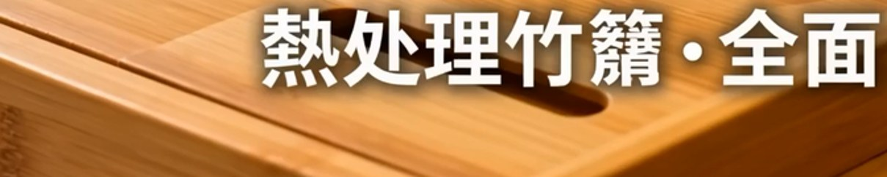

Полные ролики. Слева — текущее видео на сайте (с ошибкой), справа — новый кандидат (исправленный японский). Нажми play на обоих.
Это временная страница только для проверки — новые ролики на основной сайт НЕ установлены. После твоего решения поставлю утверждённые и удалю эту страницу.
V12 · Problem-Solution (16:9)
Оверлей: 「熱処理竹籠」 (竹籠 = бамбуковая корзина, неверно) → 「熱処理竹」. Композиция почти идентична (правил сам кадр, только текст).
OLD (на сайте)
❌ что не так На белом оверлёе написано 「熱処理竹籠」. Иероглиф 籠 — это «корзина»: получается «термообработанная бамбуковая корзина», а товар — поднос. Должно быть 「熱処理竹」 (термообработанный бамбук).

NEW (кандидат)
V02 · Sumo-Smash (9:16)
Свитки-каша 認志 / 木莖狂神 → чистые 道・力・無垢 + слоган 壊れない。 Новый ракурс (полная регенерация — каша была вплетена в сцену).
OLD (на сайте)
❌ что не так Таблички и свиток на стене додзё показывают бессмысленный набор иероглифов (напр. 認志, 木莖狂神) — это не настоящие японские слова, ИИ «нарисовал кашу». Для японца сразу видно фальшь.